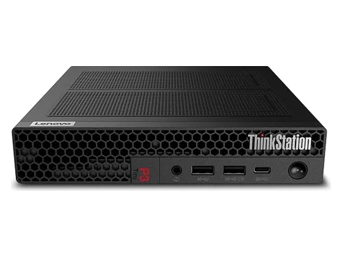

Geekom IT15 : avis, tests et prix
Le verdict en une phrase. Les 16 cœurs du Core Ultra 9 dans un boîtier de poche, avec deux ports USB4 et un Windows sans logiciels superflus.
N° 9 sur 10 dans le top 10 Ordinateurs de bureau création.

Pour qui ?
Vous voulez beaucoup de puissance processeur dans un boîtier de poche, avec deux ports USB4.
Vous voulez aussi jouer : la puce graphique n'est pas faite pour cela.
Le consensus de la presse
Sur 6 notes, 5 atteignent ou dépassent 8/10. La plus haute : 8,0/10 (Chip.de) ; la plus basse : 6,0/10 (Neozone). Dernier test relevé : décembre 2025.
Où l'acheter
La configuration peut différer d'un marchand à l'autre : vérifiez la fiche avant d'acheter. Liens d'affiliation : ils n'influencent ni les notes ni le classement.
Tous les tests recensés
Chaque ligne renvoie vers le test d'origine. Les notes sont converties sur 10 ; « test » signale un article sans note chiffrée. Notre méthode.
- Chip.de8,0
- Frandroid8,0
- PCWorld8,0
- Presse Citron8,0
- TechPowerUp8,0
- Neozone6,0
- AndroidWorldtest
- IT Protest
Source du relevé : Synthèse CommentChoisir.
Les alternatives pour le même usage
Tout le top 10 → Minisforum MS-S1 Max16 cœurs Zen 5 et jusqu'à 128 Go de mémoire unifiée : une mini-station taillée pour l'IA locale et le calcul lourd.
N° 8 · Le mini-PC le plus testé
Minisforum MS-S1 Max16 cœurs Zen 5 et jusqu'à 128 Go de mémoire unifiée : une mini-station taillée pour l'IA locale et le calcul lourd.
N° 8 · Le mini-PC le plus testé
 Geekom A9 MaxUn mini-PC très puissant et bien fini, livré avec 32 Go de RAM évolutifs et 2 To de SSD. La puce graphique intégrée reste sa limite.
N° 10 · La station certifiée
Geekom A9 MaxUn mini-PC très puissant et bien fini, livré avec 32 Go de RAM évolutifs et 2 To de SSD. La puce graphique intégrée reste sa limite.
N° 10 · La station certifiée

Lenovo ThinkStation P3 TinyUne station de travail d'un litre, prête pour la CAO et le rendu 3D, avec une connectique abondante. Ventilation sonore en charge.Questions fréquentes
Que pense la presse de l'ordinateur Geekom IT15 ?
La note presse moyenne est de 7,7/10, calculée sur 6 notes (de 6,0 à 8,0/10). Les 16 cœurs du Core Ultra 9 dans un boîtier de poche, avec deux ports USB4 et un Windows sans logiciels superflus.
Quels sont les points faibles relevés par les tests ?
Puce graphique peu adaptée au jeu ; Chauffe perceptible en charge ; Pas d'USB-C en façade.
À qui s'adresse le modèle Geekom IT15 ?
Vous voulez beaucoup de puissance processeur dans un boîtier de poche, avec deux ports USB4. À éviter si : vous voulez aussi jouer : la puce graphique n'est pas faite pour cela.
Où l'acheter, et à quel prix ?
Prix relevés le 02/10/2026 : 1 399 € chez Geekom ; 1 399 € chez Amazon. Les prix changent vite et la configuration peut différer d'un marchand à l'autre : seul le prix affiché par le marchand fait foi.